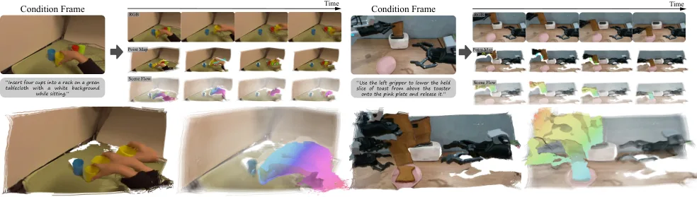
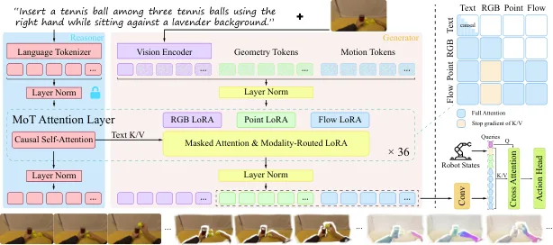
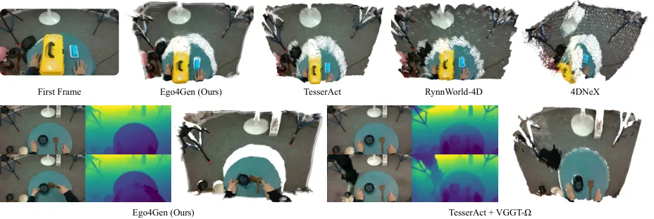
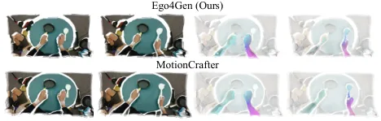
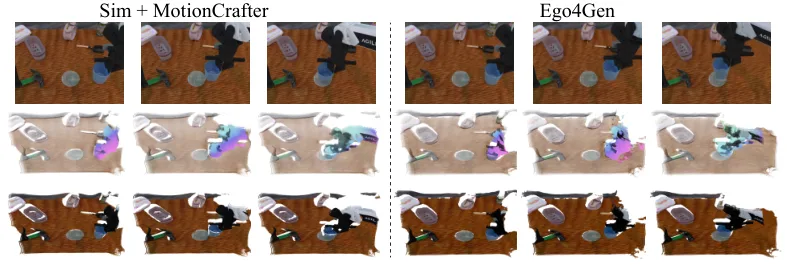

Ego4Gen：把「几何–运动潜变量」当作世界模型与动作之间的接口
Ego4Gen: Generating Geometry-Grounded Motion Tokens as a World-Action Interface
一句话：不要用视频像素当世界模型的接口，用「点图 + 场景流」这组几何–运动潜变量，既能解码成 4D，也能直接喂给逆动力学出动作。
success
AbsRel
Rel_p
success
作者、单位与技术谱系 · Research context
作者与单位
研究脉络
- Cosmos3-Nano（NVIDIA Cosmos 3 全模态世界模型）方法基座关系：提供 MoT 骨干、文本推理器与图生视频通路，Ego4Gen 冻结其权重并加几何/运动分支。[Ego4Gen 原文 §3.2 与 Table 2]
- MotionCrafter：Dense Geometry and Motion Reconstruction with a 4D VAE方法上游关系：提供几何与运动的 4D VAE 潜空间、解码器与训练伪标签，是「几何–运动接口」得以成立的前提。[Ego4Gen 原文 §3.1、§3.2 与 Table 4]
- Wan2.2 VAE方法基座关系：提供视觉分支的潜空间（时间压缩 4 倍），决定视觉 token 的时间槽数。[Ego4Gen 原文 §3.2.1 与 Table 1]
- 4D-WAM / X-WAM / Fast-WAM（几何监督 WAM 路线）问题上游关系：它们代表「给 WAM 加几何输入或几何监督」的既有路线，Ego4Gen 的差异是把几何变成可解码、可当动作接口的潜变量。[Ego4Gen 原文 §2.1、Table 3 与 Table 4]
合作网络
- HIT × Yunnan Minzu 跨机构署名Harbin Institute of Technology → Yunnan Minzu University关系：共同署名（跨机构合作）[Ego4Gen 原文首页作者单位]
- Ego4Gen → MotionCrafter 4D VAEEgo4Gen → MotionCrafter（冻结）关系：技术依赖（表征与伪标签）[Ego4Gen 原文 §3.2.1、§3.3]
- Ego4Gen → RoboTwin 2.0 / EgoDex / AgiBotEgo4Gen → RoboTwin 2.0、EgoDex、AgiBot关系：数据依赖[Ego4Gen 原文 §3.4、§4.3]
作者单位与通讯符号取自论文首页；技术谱系取自正文显式引用、消融与对照表。Cosmos3-Nano 与 MotionCrafter 是外部依赖，不构成作者间合作边；未发现可公开核验的导师关系，故不作推断。
方法本质拆解 · What actually changed
是不是微调？
是「冻结骨干 + 模态路由 LoRA」的适配式训练：Cosmos3-Nano 的预训练权重冻结，视觉/几何/运动三组 LoRA 与几何、运动的输入输出头一起训练，三个模态用各自的 rectified-flow 速度损失联合优化。FlowInverse 另做两阶段训练（50 任务预训练 + 逐任务微调），期间 Ego4Gen 完全冻结。
有没有额外约束？
约束主要来自注意力掩码：RGB 只见文本与 RGB，几何/运动可见全部模态但读 RGB 的 K/V 时用 stop-gradient，形成单向条件；运动模态额外加 0.25 的绝对时间偏移以对齐「帧间位移」的语义；几何与运动的 latent 目标由冻结的 MotionCrafter 产生，等于用外部 4D VAE 固定了表征空间。
推理/后端到底做了什么？
推理是「世界模型 + 逆动力学」两段：先用 Ego4Gen 从首帧与指令生成未来潜变量并解码成 RGB/点图/流；闭环时每 40 个控制步重新生成一次，再由 FlowInverse 读几何与运动潜变量与本体状态，输出关节增量与夹爪指令。没有测试时优化，也没有用未来真值做校正。
方法本质是什么？
本质是把「世界模型该输出什么」从像素改成几何–运动：像素里混着外观、光照、视角，几何–运动只保留「物体怎么在三维里移动」，因此更适合当动作的条件。它改变的是感知与决策之间的接口表征，代价是把精度上限交给了 MotionCrafter 的 4D VAE 与 VGGT-Ω 伪参考。
输入首帧与指令，Cosmos3-Nano + 模态路由 LoRA 联合生成 RGB、点图、场景流潜变量，既能解码成 4D，也能由 FlowInverse 直接读成关节动作。

结论与问题Conclusion & Motivation
核心结论
Ego4Gen 的核心论点是「世界模型与策略之间的接口应该是几何–运动，而不是 RGB 像素」。它用 Cosmos3-Nano 的 MoT 骨干联合生成 RGB、点图与场景流三条潜变量序列，几何与运动用 MotionCrafter 的 4D VAE 潜空间表示，因此同一条潜变量既能解码成显式 4D（点图 + 流），也能被一个轻量逆动力学网络 FlowInverse 直接映射成关节增量。最有说服力的证据是表征替换实验：同一套 FlowInverse、同样的预训练与微调流程，只换输入表征，几何–运动在 RoboTwin Hard 上拿到 51%/37%，而 DreamDojo、UniVLA、Wan2.2 的视频/latent-action 表征在 Hard 上基本为 0。
动机与问题
机器人策略的动作标签只监督动作，不监督「动作会把场景变成什么样」；世界动作模型（WAM）通过预测未来观测补上这个信号，但多数 WAM 预测的是 RGB 或视觉潜变量，物体外观、背景、视角与真正的三维变化混在一起，控制需要的几何转变仍是隐含的。已有几何监督的 WAM（X-WAM、4D-WAM、GeoSem-WAM、MECo-WAM）各自引入深度、点图或语义几何，但很少回答「哪种表征最适合当动作接口」。Ego4Gen 把问题重述为：如果世界模型输出的是「场景在三维里怎么动」，那么逆动力学只需要读这组变化，是否能在分布外场景比视频潜变量更稳？
方法Method
方法总览
输入首帧 I0 与文本 c，输出未来 4 秒的 RGB（96 帧 @24FPS）、点图与场景流（各 48 帧 @12FPS，几何覆盖同一时间窗但采样率不同）。视觉用 Wan2.2 VAE 潜空间，几何与运动用 MotionCrafter 的 4D VAE 潜空间；三者经模态特定的时空 patchify 对齐到同一 token 网格（视觉 25 个时间槽、几何与运动各 24 个），共享 Cosmos3 的三维 MRoPE 位置编码，运动模态额外加 0.25 的绝对时间偏移（因为一帧运动表示相邻两帧几何之间的位移）。去噪用三个模态各自的 rectified-flow 速度场损失相加；解码时 R̂=D_R(ẑ_V)、P̂=D_P(ẑ_G)、F̂=D_F(ẑ_M, ẑ_G)，最后一帧流置零。
关键技术细节
三个工程要点决定它能否在有限数据上不破坏预训练先验：第一是模态路由 LoRA，视觉分支 (r,α)=(32,64)、几何与运动分支 (64,128)，每个 token 按其模态标签路由到独立的低秩更新，文本 token 用冻结的基座参数；第二是非对称注意力，RGB token 只看文本与 RGB，点/流 token 看全部模态，从 RGB 到几何是单向条件；第三是梯度隔离，点/流 token 在读 RGB 的 K/V 时用 stop-gradient，避免几何监督反过来干扰视频生成。FlowInverse 则是两个卷积编码器分别读几何与运动潜变量，加时空位置编码与模态 embedding，用 action query 对两路 token 与本体状态做交叉注意力，主监督是关节增量与夹爪状态，末端位移作为辅助监督。

实验Experiments
实验设置
预训练数据为 EgoDex、AgiBot 与 RoboTwin 2.0 中 ALOHA-AgileX 的干净任务轨迹，统一切成 4 秒窗口，8 张 RTX PRO 6000、全局 batch 24、40K 步、WSD 学习率。FlowInverse 两阶段训练：先在 RoboTwin 50 个干净任务上用冻结 MotionCrafter 从专家视频抽出的潜变量预训练，再对每个目标任务用「Ego4Gen 生成的潜变量 + 对应动作轨迹」微调，Ego4Gen 全程冻结。评测分四块：表征对比（RoboTwin 的 Place Empty Cup 与 Pick Diverse Bottles，Easy/Hard，报成功率与动作 MSE）、4D 生成（TACO 未参与训练，2 秒与 4 秒两个时间窗，报 PSNR/LPIPS/AbsRel/δ1/Rel_p/δp）、闭环控制（RoboTwin 五个任务，Easy/Hard，对照 DP、TurboVLA、starVLA、Fast-WAM、π0）、消融（EgoDex 测试片段 4 秒）。
实验数字与比较
表征对比（成功率 % / MSE ×10⁻³ rad²）：几何–运动在 Place Empty Cup 的 Easy/Hard 为 82/0.66 与 51/1.72，Pick Diverse Bottles 为 46/5.18 与 37/4.04；DreamDojo 为 88/0.56 与 0/12.49、35/4.24 与 0/38.91；UniVLA 为 51/0.99 与 0/15.96、12/7.08 与 4/12.74；Wan2.2 视频潜变量为 16/1.96 与 0/38.01、31/4.37 与 0/100.46。4D 生成 2 秒：PSNR 16.06、LPIPS 0.394、AbsRel 0.140、δ1 0.807、Rel_p 23.21、δp 73.62，对照 TesserAct 0.144/0.798 与 4DNeX Rel_p 30.34/δp 50.80；4 秒：AbsRel 0.153 对 TesserAct 0.160。闭环：mean Easy/Hard 46.6/15.2，对照 π0 41.0/21.4、starVLA 67.2/9.6、Fast-WAM 85.0/0.2；混合无动作标签后训练把 Hard 提到 26.4（Easy 降到 37.2）。
消融/失败边界
组件消融（EgoDex 4 秒片段）：共享 LoRA PSNR 20.95、LPIPS 0.297、法向一致性 NC 0.02382；仅路由 22.44/0.230/0.01906；路由 + 非对称注意力 23.02/0.209/0.01446；路由 + 梯度隔离 22.95/0.212/0.01575；三项全开 23.55/0.180/0.01472——说明非对称注意力主要救视觉质量，梯度隔离单独用效果略低但组合后最好。FlowInverse 去掉 50 任务预训练，mean Easy/Hard 从 46.6/15.2 掉到 18.4/7.4，Place Empty Cup 从 61/20 掉到 3/0，说明「跨任务预训练」几乎是这个接口能工作的前提。失败边界也很清楚：Easy 设定下它并不占优（DreamDojo 88 高于 82；starVLA、Fast-WAM、π0 的 Easy 均值更高），混合后训练提升 Hard 的同时压低 Easy，作者归因于「新生成器的潜变量分布与 FlowInverse 训练时使用的潜变量不匹配」。
局限与迁移Limitations & Transfer
局限与待核验
作者明确承认：没有相机参数预测分支，因此要把点图转成深度必须借用 TACO 的真值内外参；三维运动没有真值，只能用 VGGT-Ω + AllTracker 从自己生成的 RGB 构造伪参考，再按首帧深度定尺度；混合后训练会让 Easy 下降，原因是潜变量与 FlowInverse 的分布错配。我们的待核验项：第一，4D 生成的对照里只有 4DNeX 报了 Rel_p，其他方法缺项，PSNR 16.06 对 16.27 的差距是否显著没有置信区间或多 seed；第二，闭环只在 5 个 RoboTwin 任务上评，且「每 40 控制步重新生成一次未来」的开环频率是否足以应对接触丰富的任务，没有延迟/重规划分析；第三，运动评估只统计动态点，且伪参考本身来自 VGGT-Ω，等于用另一套几何模型给几何模型打分，存在循环论证风险；第四，EgoDex/AgiBot 的第一视角数据与 ALOHA 机械臂的具身差异如何影响迁移，文中未量化。
与你研究路线的关系
这篇对我们的价值在「接口设计」这一层：它把世界模型的输出压到「几何 + 运动」两组潜变量，再用一个只读这两组的逆动力学网络出动作——这等价于在感知与决策之间放了一个显式的、可解码的三维中间表示，而不是让策略直接吃像素。我们的多传感器融合/状态估计链路天然产出点图与场景流，因此可以把「几何–运动潜变量」当成一个下游可复用的接口：同一份输出既做建图评估，也做控制输入。可迁移的模块有两个：模态路由 LoRA（不同传感器模态各自一组低秩参数，避免互相干扰）与梯度隔离的非对称注意力（让几何分支读图像但不反向污染图像分支），后者可以直接用于我们「学习型深度先验 + 几何优化」的联合训练。下一步最小实验：在我们已有的序列上，比较「RGB 潜变量」与「点图 + 流」两种接口接同一个轻量逆动力学/回归头，在分布外（不同场景/不同传感器）条件下的误差，验证几何接口是否真的更稳。





